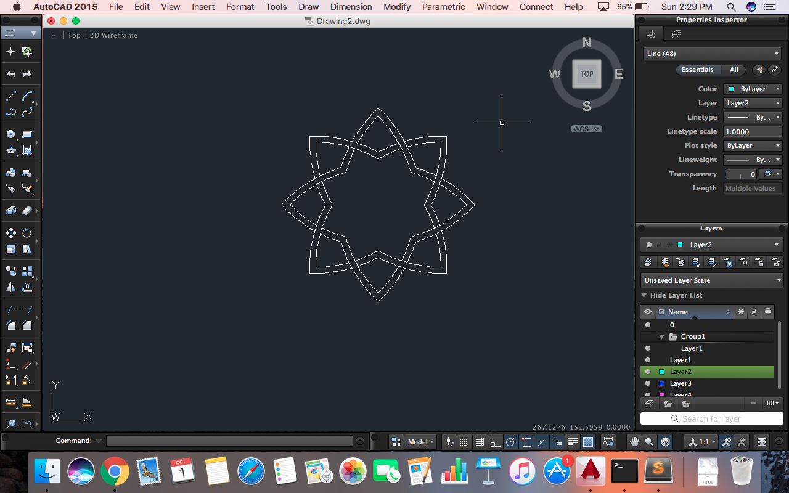

Applications and Implications
- I came to know about Sketch Up when I had to mentor into TinkerFest in which students made designs in sketchup and 3D printed it.
- I had to learn 3D printing and Laser Cutting for my flute project so I started with Autocad
- I took membership of Fablab and started working over there. There they told me to start with Autocad for Laser cutting.
- I downloaded Autocad from it official website https://www.autodesk.in/products/autocad/free-trial. I took 30 days free trial pack.
- The very first day I started to make 2D Designs. I had seen its tutorial on Utube and read pdf files explaining Autocad but could not understand any thing so I went out for a walk at and came across designs made by students studying in the very same college which inspired me to again start and try again.
- In the begining I found it difficult to understand commands but I managed somehow. Then Rudrapal taugth me basics again and then I got clear idea about In the begining I found it difficult to understand commands but I managed somehow. Then Rudrapal taugth me basics again and then I got clear idea about it.
- He guided me to make any object that I could make and after completing that we proceeded by making Islamic Patterns
- I searched islamic patterns on Utube and made one design. Now I got clear idea of using Autocad commands and made two more designs. These designs are difficult to make on papper but easy with Autocad
- The commands I used for simple designs were Line, Circle, Rectangle and Arc. I tried to make a flower vase, Bluetooth Speaker and Mobile.
- Them Rudrapal taught me some more commands like TRIM, FILLET, XL, LINE, JOINT, ROTATE, MIRROR, GRID, etc with the help of which I started making Islamic Patterns.
My first Islamic Pattern
